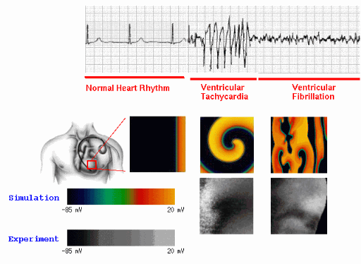

|
人工智慧應用於心律不整螺旋波相位奇異點之偵測 |
||
研究動機根據世界衛生組織(WHO)，心血管疾病是全球第一大死因，常見的心血管疾病中就包括心律不整等心臟疾病，同時人工智慧在醫療領域的應用也越來越廣泛，不僅能快速處理大量的醫療數據，還能從中挖掘出關鍵的病理特徵，減少人工標註的不確定性，提升診斷效率與準確性，因此我們選擇這個題目作為此研究的出發點。 |
||
研究目的 ●相位奇異點(phase singularities, PS)與心律不整機制研究： PS是心臟電生理光學映射（optical mapping）分析中一個核心的 幾何特徵，對理解心律不整（如心房顫動(AF)、心室顫動(VF)、心 室頻脈(VT)）的基礎機制具有重要意義。 Phase Singularity揭示 了心臟電活動中的旋轉波（spiral wave 或 reentry wave）核心 位置，在心律不整中，旋轉波常作為驅動異常心律的主要機制，因 此PS的定位追蹤可以為心律不整的動態行為提供關鍵洞察。 ●PS在醫療上的應用： 異常節點的標定與電燒： PS的位置標定是心律不整心肌電燒治療的重要指導信息。PS對應於驅動心律不整的關鍵節點（如旋轉波核心或異常自動化焦點），PS的精準定位與追蹤對於心肌電燒術治療能提高成功率。 ●藥物與干預效果評估： 不同藥物或干預措施（如電刺激）的效果可以通過其對 PS 動態的影響進行量化。例如，抑制旋轉波分裂或減少 PS 數量可以被視為藥物抑制心律不整的有效指標。 ●與PS定位追蹤之相關論文： Lebert J et al. “Rotor Localization and Phase Mapping of Cardiac Excitation Waves Using Deep Neural Networks. Front Physiol.” 2021 Dec 17;12:782176. <說明> AI模型: Encoder-Decoder架構之CNN 輸入: 心臟電位活動的圖像資料 訓練的答案(ground truth): 數學circular integral計算出的PS位置+Hilbert transform計算所得的相位訊號(phase signal) 輸出: 相位圖(phase map)+PS位置 目前文獻“尚未有直接使用深度學習物件偵測模型(如YOLO)來偵測定位PS的研究”，而YOLO 模型偵測PS目標的快速與簡易使用，在實際的應用中將優於以上現有論文的方法，這引起我們使用YOLO系列模型來定位追蹤PS的動機。 |
||